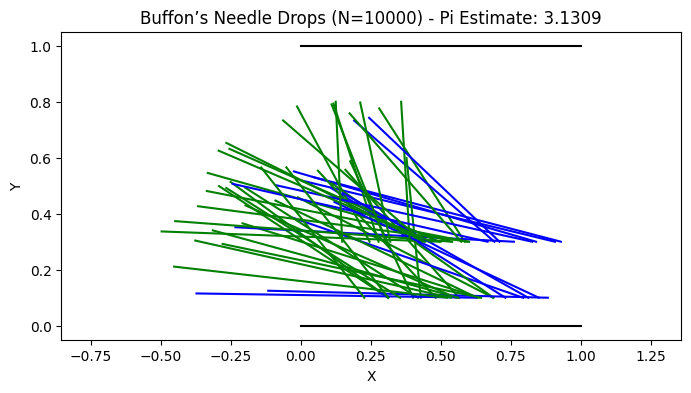
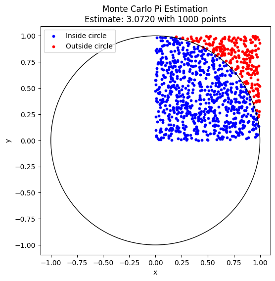
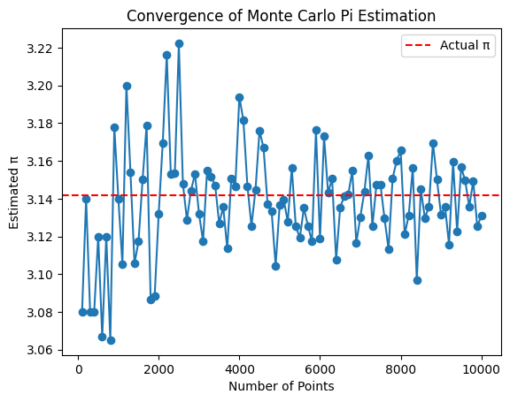
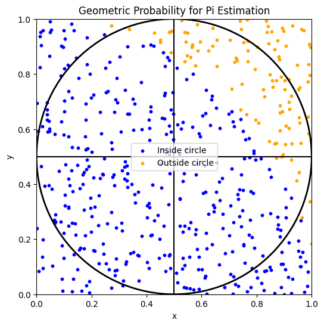

Problem 2
Estimating Pi Using Monte Carlo Methods
Introduction
Monte Carlo methods use randomness to solve problems or estimate values.
A classic application is estimating π through geometric probability.
Part 1: Estimating π Using a Circle
1. Theoretical Foundation
- Consider a square of side 2, centered at the origin, with coordinates from -1 to 1.
- Inside, inscribe a circle of radius 1.
- When points are uniformly randomly generated within the square:
\[
P_{inside} = \frac{\text{Area of circle}}{\text{Area of square}} = \frac{\pi \times 1^2}{4} = \frac{\pi}{4}
\]
- Therefore, the estimate of π:
\[
\pi \approx 4 \times \frac{\text{Number of points inside}}{\text{Total number of points}}
\]
2. Simulation Approach
- Generate \(N\) random points in \([-1, 1]\) for both x and y.
- Count how many fall inside the circle, i.e., satisfy \(x^2 + y^2 \leq 1\).
- Compute the estimate:
\[
\pi \approx 4 \times \frac{M}{N}
\]
3. Visualization
- Plot all points:
- Inside the circle: one color (e.g., blue)
- Outside the circle: another color (e.g., red)
- Draw the circle boundary for reference.
4. Analysis
- As \(N\) increases, the estimate converges to the true π.
- Convergence rate is approximately \(O(1/\sqrt{N})\).
- Computational complexity is linear in the number of points, \(O(N)\).
Part 2: Estimating π Using Buffon’s Needle
1. Theoretical Background
- Parallel lines spaced \(d\) units apart.
- Drop a needle of length \(L \leq d\) randomly.
- Probability that the needle crosses a line:
\[
P = \frac{2L}{\pi d}
\]
- Rearranged to estimate π:
\[
\pi = \frac{2L}{d P}
\]
- For simplicity, set \(L = d = 1\):
\[
\pi \approx \frac{2}{P}
\]
2. Simulation Approach
- Randomly generate:
- Needle center position \(x_{center}\) uniformly in \([0, d/2]\).
- Angle \(\theta\) uniformly in \([0, \pi/2]\).
- Check crossing condition:
\[
\text{Crosses} \quad \iff \quad \sin(\theta) \times \frac{L}{2} \geq x_{center}
\]
- Estimate π:
\[
\pi \approx \frac{2L \times N}{d \times C}
\]
where \(C\) is the number of crossings.
3. Visualization
Circle Method (Buffon needle method)

-
Basic Monte Carlo Estimation of Pi with Scatter Plot This script randomly generates points in a square and counts how many fall inside the inscribed circle, estimating π. 
-
Plotting Convergence of Pi Estimate Over Number of Points This script runs the simulation multiple times and plots how the estimate approaches π as the number of points increases. 
-
Visualizing the Geometric Interpretation This script draws the square and inscribed circle, showing a subset of points to illustrate the geometric probability. 